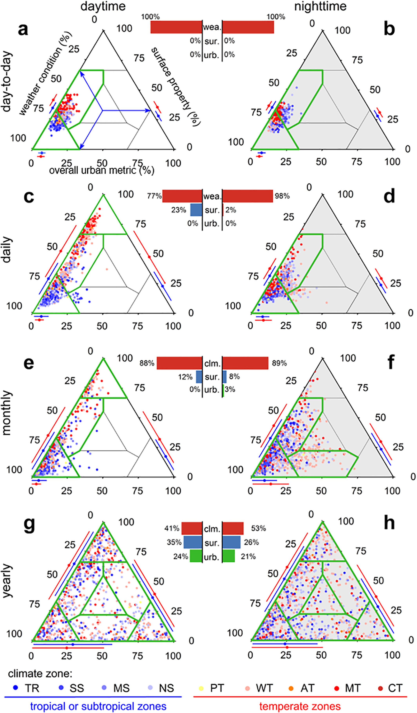
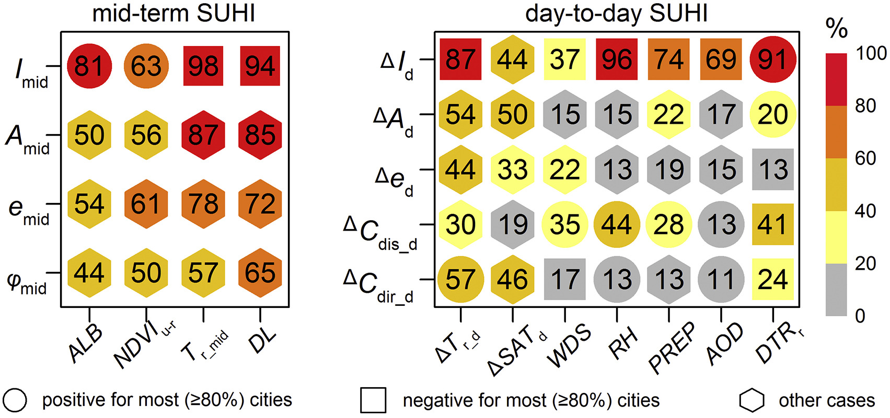
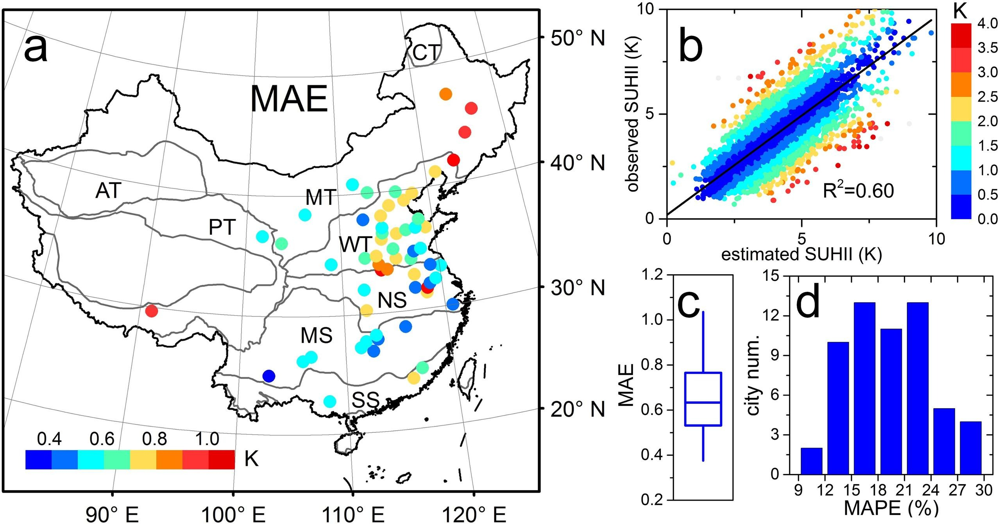
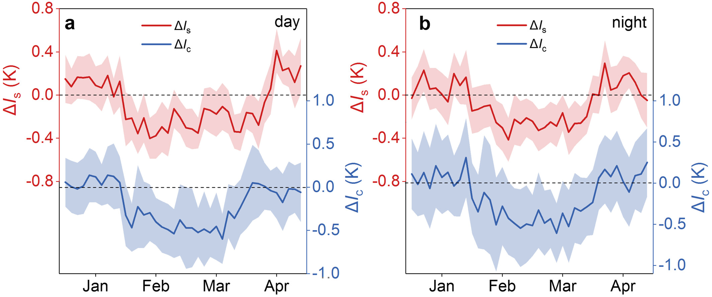

Theme 3
Monitoring heat and energy dynamics and promoting urban sustainability
More than half of the world’s population lives in urban areas, making cities highly vulnerable to climate change and environmental stresses. My research addresses the urgent challenge of urban heat through innovative monitoring approaches, mechanistic understanding, and prediction capabilities to support climate-resilient cities.
Improving monitoring, understanding, and adaptation to heat-exposure hazards in cities
I have accomplished a series of inter-connected studies on urban heat island (UHI)—one of the most evident examples of human-caused effects on local climate.
Reconciling debates on the controls on surface urban heat island (SUHI) intensity
|

|
My study (Lai et al., 2021, GRL) reconciled the intensive debates over the relative importance of three control types on SUHI, i.e.,
surface property, background climte (or weather) conditions, and overall urban metric. Over 896 Chinese city clusters, I show that the priorities
of these three types of controls are dependent closely on the scale and sampling criteria. With increasing temporal scale, the contributions from
climate (or weather) conditions decrease, while those from surface property and overall urban metric increase. No common rank exists in the relative
importance of main types of SUHII controls over different spatial scales. The sampling style of city cluster by urban area or climate zone
also contributes to debates on ranks of SUHII controls. Figure description: Relative importance of the three types of SUHII control on multiple temporal scales. Each data point denotes one city, and the different locations of dots denote the different priority of the three types of factors on controling the SUHII variability. |
Attribution analysis of the daily variations in the nighttime surface urban heat islands
|
SUHI was usually studied at seasonal/annual timescale. My study (Lai et al., 2021, RSE) revealed that the SUHI (both its intensity and footprint) also exhibited large variations at day-to-day scale, but the environmental drivers for these day-to-day variabilities are largely unknown. By extracting the daily variations of nighttime SUHI features using the Gaussian model and investigating their correlations with various explanatory factors, I found a significant controlling effects from meteorological variables, and such controls are larger in temperate than in subtropical zones. |

Correlation analysis for mid-term SUHIs and day-to-day SUHIs.The numbers are percentages of megacities where there is a significant correlation (p < 0.05) between the associated SUHI variables and explanatory factors. |
Estimation of the next-day nighttime surface urban heat islands
|

Estimation performance of the next-day SUHIIs in the chosen cities. (a) shows the spatial distribution of the MAE (K). (b) provides the relationship between the estimated next-day SUHIIs and observed SUHIIs, with the dot colors representing the estimated absolute errors. (c) exhibits the boxplot for MAE. (d) displays the MAPE histogram. |
My study (Lai et al., 2021, ISPRS-JPRS) proposed a simple yet efficient approach to statistically estimate the next-day nighttime surface urban heat islands. The estimated SUHI intensities have an averaged MAE of 0.67 K. I found that estimators related to the SUHI day-to-day variations largely contribute to the estimation. The research is crucial for building effective early-warming systems for heat stresses. |
Taxonomy of the diurnal patterns of surface urban heat islands
|
My study (Lai et al., 2018, RSE)
provided the first insight into the taxonomy of the diurnal SUHI patterns, an indispensable step
towards the full interpretation of SUHI at multiple time scales. I reconstructed the full diurnal cycle of the SUHI from periodical
but infrequent satellite observations using a four-parameter diurnal temperature cycle (DTC) model. Five typical diurnal patterns
of the SUHI intensity were identified, and they are greatly controlled by urban-rural NDVI differences. |

The identified five typical diurnal patterns of the surface urban heat island intensity. |
Impacts from the quality of satellite land surface temperature product on the surface urban heat island estimation
My study (Lai et al., 2018, ISPRS-JPRS)
showed that the lower quality of satellite data (compared to in-situ measurements)
can distort the UHI interpretation more significantly than previously recognized. Specifically, considering satellite data quality
control can modify the SUHI intensity (SUHII) by 24.3% (29.9%) during the day (night). There is a significant north-south contrast
in the SUHI variations caused by satellite data quality over Chinese cities.

The daytime SUHII variations induced by satellite data quality. |

The nighttime SUHII variations induced by satellite data quality. |
Reduction in urban heat island during COVID-19 lockdown period
|
Our study (Liu, Lai et al., 2022, GRL)
found a significant decline in both surface and canopy urban heat island 300-plus megacities in China
during COVID-19 lockdown periods compared with reference periods. These reductions are mainly
due to the near-unprecedented drop in human activities induced by strict lockdown measures. |

Comparison of the variations in surface UHI intensity (i.e., ΔIs, dark red lines, left y-axis)
and canopy UHII (i.e., ΔIc, dark blue lines, right y-axis) during lockdown periods. |